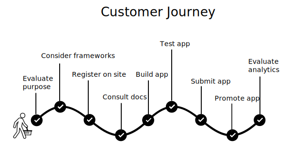

Tech comm trends
Providing value as a generalist in a sea of specialists
By Tom Johnson / @tomjohnson
idratherbewriting.com
Slides: idratherbewriting.com/trends-generalists-specialists Presentation in blog form: http://bit.ly/genandspecialisttrendspart1
Why trends intrigue us
Argument overview
- Technology is getting simpler on the front-end for end-users
- But the code underneath is becoming increasingly specialized/complex
- Tech writers are generalists, not specialists
- To provide value in specialist contexts, tech writers must exploit the gaps
- These gaps are (1) doc tools/processes, (2) understanding user feedback/experiences, and (3) information usability
Trends: From end-user to dev domain
The impact of UX and the need for documentation
Evaluating Grey's argument and changes in the profession
UIs get simpler, code gets more complex
Natural language interfaces -- like an iceberg underneath
Moving into hyperspecialization
Just as people in the early days of industrialization saw single jobs (such as a pin maker’s) transformed into many jobs (Adam Smith observed 18 separate steps in a pin factory), we will now see knowledge-worker jobs — salesperson, secretary, engineer — atomize into complex networks of people all over the world performing highly specialized tasks.
No UX designers to vet/filter poor designs in dev domain

TC jobs moving into developer domain
Developers are writing more docs due to specialized info
Write the Docs as Evidence that Developer Docs Is Growing
Shifts toward Markdown and docs-as-code
The current predicament for TC, and where the gaps are
| Predicament | Gaps |
|---|---|
| Generalists trying to prove value in a context where specialized knowledge reigns | 1. Authoring/publishing processes and tools 2. Knowledge/feedback about the user experience 3. Information usability |
1. Gaps in doc tooling/processes
Opportunities related to doc tools and processes
Incorporating structure into content
The aim [of structured writing] is not to eliminate complexity altogether – that is impossible – but to partition it so that each part of that complexity is handled by the person or process with the knowledge, skills, and resources to handle it. (xxi)
— Mark Baker, Structured Writing
Tables don't work beyond 5-6 columns
Separate the content from the display
media_specifications:
video:
h265:
ftvcube: Hardware accelerated up to 3840x2160p (4K) @ 60fps...
ftvgen3: Hardware accelerated up to 3840x2160p (4K) @ 60fps...
ftvgen2: Hardware accelerated up to 3840x2160p (4K) @ 30fps...
ftvgen1: Not supported
ftvstickgen2: Hardware accelerated up to 1080p @ 30fps...
ftvstickbasicedition: Hardware accelerated up to 1080p @ 30fps...
ftveditionelement: Hardware accelerated up to 3840x2160p (4K) @ 60fps...
ftveditiontoshiba4k: Hardware accelerated up to 3840x2160p (4K) @ 60fps...
h264:
ftvcube: Hardware accelerated up to 3840x2160p @ 30fps...
ftvgen3: Hardware accelerated up to 3840x2160p @ 30fps...
ftvgen2: Hardware accelerated up to 1080p @ 30fps...
ftvgen1: Hardware accelerated up to 1080p @ 30fps...
ftvstickgen2: Hardware accelerated up to 1080p @ 30fps...
ftvstickgen1: Hardware accelerated up to 1080p @ 30fps...
ftvstickbasicedition: Hardware accelerated up to 1080p @ 30fps...
ftveditionelement: Hardware accelerated up to 3840x2160p @ 60fps...
ftveditiontoshiba4k: Hardware accelerated up to 3840x2160p @ 30fps...
...
Display result
Identify the structure
ElementName:
anchor: string
description: >
string
required: boolean
added: string
deprecated: string
parent_elements:
- name: string
deprecated: boolean
child_elements:
required:
- name: string
deprecated: boolean
optional:
- name: string
deprecated: boolean
this_element_only_required:
- name: string
deprecated: boolean
this_element_only_optional:
- name: string
deprecated: boolean
child_elements_notes: string
child_elements_this_element_only_notes: string
attributes:
- name: string
accepted_values:
- value: boolean
description: string
required: boolean
accepted_values: string (if empty, [])
example: |
code...
Display result
Using specifications with APIs

Swagger UI display from the OpenAPI specification
2. Gaps in user feedback/experience
Identifying where the UX problems are

Surface problems to the right teams
So, how can we improve API documentation if the only people who can accomplish this task are too busy to do it...? One potential way [is to] reduce as much of the administrative overhead of documentation writing as possible, letting experts focus exclusively on the value-producing part of the task. ... a main challenge for evolving API documentation is identifying where a document needs to be updated. — Uddin and Robillard
Doc feedback buttons
Doc feedback form
Surveys at select milestone events
Summaries of weekly issues resolved
Leveraging information flow through docs

3. Gaps in Information usability
p1: Give users a map
First we split complex process into chunks

Maps bring the pieces together

p2: Make info discoverable as needed
Complex systems contain feedback loops
Each new piece of data the user uncovers affects the path taken and the eventual outcome. … it does not lend itself to being performed with a defined set of tasks nor can those tasks be performed in a fixed order.
— Michael Albers, Content and Complexity
Sintering as an analogy
p3: Ensure harmony across all docs
Systems developed independently but interact together
Specialization is required in order to understand more and more about the intricate systems around us.... But at the same time, the systems we are building ... are not only intricate and complicated, but also stitch together field after field.... The design of driverless cars is a good example, requiring collaboration among ... software, lasers, automotive engineering, digital mapping, and more. — Samuel Arbseon
Looking for fit across the docs, blogs, forums

p4: Reduce and distill to its essence
Compress into smaller, more consumable units

Article summaries

Quick reference guides

p5: Conform to genre expectations
Schema theory
By catering my design to meeting your experiences, I make these items easier for you to use in that context. — Kirk St. Amant
Four Components Model
Narrative paradigm

Structuring information around the customer journey
p6: Reduce language complexity
I came across a set of API resources for managing a DEG the other day. You could add, update, delete and get DEGs. You can also pull analytics, history, and other elements of a DEG. I spent about 10-15 minutes looking around their developer portal, documentation, and even Googling, but never could figure out what a DEG was. Nowhere in their documentation did they ever tell consumers what a DEG was, you just had to be in the know I guess. — Kin Lane
[Not] Recognizing familiar terms

Background knowledge sections

p7: Iterative design of docs
Docs as a "theory" to test
In a sense, many things on a software development project are theories, or more accurately, assertions that need to be evaluated. ... Just because some stakeholders ... say a requirement is valid does not mean that they are correct. We need to evaluate even the requirements to determine whether they define the right solution to the problem at hand. — Spence and Bitner
Upon initial publication, begin iterative cycles

Recap of Argument
- Technology is getting simpler on the front-end for end-users
- But the code underneath is becoming increasingly specialized/complex
- Tech writers are generalists, not specialists
- To provide value in specialist contexts, tech writers must exploit the gaps
- These gaps are (1) doc tools/processes, (2) understanding user feedback/experiences, and (3) information usability
Where to get more info
Interactive surveys
Questions?

The end

Tom Johnson
— idratherbewriting.com
— @tomjohnson
— tomjoht@gmail.com